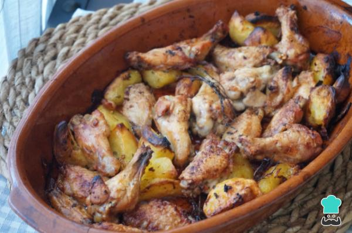

Alitas de pollo al horno con patatas

Ingredientes
- 1 kilogramo de alitas de pollo
- 4 patatas
- 1 rama de tomillo o romero
- 3 dientes de ajos
- 1 puñado de perejil picado
- 200 mililitros de vino blanco
- 1 chorro de aceite de oliva
- 1 pizca de pimienta
- 1 pizca de sal
Elaboración (Pasos)
- Para hacer las alitas de pollo al horno con patatas, calienta el horno a 180 ºC con calor arriba y abajo. Limpia las alitas cortando un poco la piel de los lados y las plumas. Añadimos sal y pimienta.
- Pon las alitas en una bandeja para horno, pela las patatas y córtalas en 4 trozos de manera que no queden ni muy gruesas ni muy delgadas, así se cocinarán a la vez que la carne. Aliña las patatas con sal y pimienta, coloca unas hojas de romero o tomillo repartidas por la bandeja y vierte un buen chorro de aceite de oliva. Cocina las alitas de pollo con patatas al horno durante 25 minutos.
- Machaca 3-4 dientes de ajo con un poco de perejil y sal en un mortero. Añade el vino y mezcla.
- Pasados los 25 minutos, saca las alitas de pollo, dales la vuelta y rocía todo el aliño de ajo, perejil y vino por toda la bandeja. Vuelve a meter la bandeja en el horno y déjala hasta que se doren las alitas.
Si tu horno no es muy potente, puedes subir a 200 ºC. Así mismo, puedes activar el aire en caso de tener esta función.
- Cuando veas que están doradas a tu gusto, saca la bandeja del horno y sirve los platos inmediatamente. Verás que con esta receta de alitas de pollo con patatas al horno te quedarán crujientes por fuera y muy jugosas por dentro. Recuerda que puedes modificar el aliño a tu gusto, de manera que en lugar de vino puedes usar cerveza, por ejemplo. Para este caso, te recomendamos esta otra Receta de alitas de pollo a la cerveza.